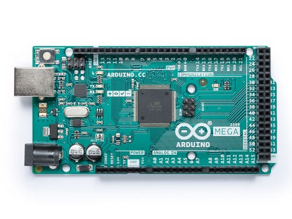
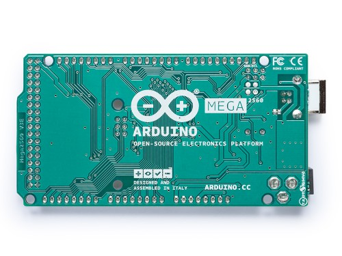

Официальный сайт компании Arduino по адресу arduino.cc
Arduino.ru
|
|
Регистрация новых пользователей и создание новых тем теперь только на новом форуме https://forum.arduino.ru
Главная
Arduino Mega 2560

Общие сведения
Arduino Mega построена на микроконтроллере ATmega2560 (техническое описание). Плата имеет 54 цифровых входа/выходов (14 из которых могут использоваться как выходы ШИМ), 16 аналоговых входов,4 последовательных порта UART, кварцевый генератор 16 МГц, USB коннектор, разъем питания, разъем ICSP и кнопка перезагрузки. Для работы необходимо подключить платформу к компьютеру посредством кабеля USB или подать питание при помощи адаптера AC/DC, или аккумуляторной батареей. Arduino Mega 2560 совместима со всеми платами расширения, разработанными для платформ Uno или Duemilanove.
Схема и исходные данные
Файлы EAGLE: arduino-mega2560-reference-design.zip
Принципиальная схема: arduino-mega2560-schematic.pdf
Краткие характеристики
|
Микроконтроллер |
ATmega2560 |
|
Рабочее напряжение |
5В |
|
Входное напряжение (рекомендуемое) |
7-12В |
|
Входное напряжение (предельное) |
6-20В |
|
Цифровые Входы/Выходы |
54 (14 из которых могут работат также как выходы ШИМ) |
|
Аналоговые входы |
16 |
|
Постоянный ток через вход/выход |
40 mA |
|
Постоянный ток для вывода 3.3 В |
50 mA |
|
Флеш-память |
256 KB (из которых 8 КB используются для загрузчика) |
|
ОЗУ |
8 KB |
|
Энергонезависимая память |
4 KB |
|
Тактовая частота |
16 MHz |
Питание
Arduino Mega может получать питание как через подключение по USB, так и от внешнего источника питания. Источник питания выбирается автоматически.
Внешнее питание (не USB) может подаваться через преобразователь напряжения AC/DC (блок питания) или аккумуляторной батареей. Преобразователь напряжения подключается посредством разъема 2.1 мм с положительным полюсом на центральном контакте. Провода от батареи подключаются к выводам Gnd и Vin разъема питания (POWER).
Платформа может работать при внешнем питании от 6 В до 20 В. При напряжении питания ниже 7 В, вывод 5V может выдавать менее 5 В, при этом платформа может работать нестабильно. При использовании напряжения выше 12 В регулятор напряжения может перегреться и повредить плату. Рекомендуемый диапазон от 7 В до 12 В.
Плата Mega2560, в отличие от предыдущих версий плат, не использует FTDI USB микроконтроллер. Для обмена данными по USB используется микроконтроллер Atmega8U2, запрограммированный как конвертер USB-to-serial.
Выводы питания:
Память
Микроконтроллер ATmega2560 имеет: 256 кБ флеш-памяти для хранения кода программы (4 кБ используется для хранения загрузчика), 8 кБ ОЗУ и 4 Кб EEPROM (которая читается и записывается с помощью библиотеки EEPROM).
Входы и Выходы
Каждый из 54 цифровых выводов Mega, используя функции pinMode(), digitalWrite(), и digitalRead(), может настраиваться как вход или выход. Выводы работают при напряжении 5 В. Каждый вывод имеет нагрузочный резистор (стандартно отключен) 20-50 кОм и может пропускать до 40 мА. Некоторые выводы имеют особые функции:
На платформе Mega2560 имеется 16 аналоговых входов, каждый разрешением 10 бит (т.е. может принимать 1024 различных значения). Стандартно выводы имеют диапазон измерения до 5 В относительно земли, тем не менее имеется возможность изменить верхний предел посредством вывода AREF и функции analogReference().
Дополнительная пара выводов платформы:
Связь
На платформе Arduino Mega2560 установлено несколько устройств для осуществления связи с компьютером, другими устройствами Arduino или микроконтроллерами. ATmega2560 поддерживает 4 порта последовательной передачи данных UART для TTL. Установленная на плате микросхема ATmega8U2 направляет один из интерфейсов через USB, предоставляя виртуальный COM порт программам на компьютере (машинам под упровлением Windows для корректной работы с виртуальным COM портом необоходим .inf файл, системы на базе OSX и Линукс, автоматически распознаю COM порт). Утилита мониторинга последовательной шины (Serial Monitor) среды разработки Arduino позволяет посылать и получать текстовые данные при подключении к платформе. Светодиоды RX и TX на платформе будут мигать при передаче данных через микросхему ATmega8U2 и USB подключение (но не при использовании последовательной передачи через выводы 0 и 1).
Библиотекой SoftwareSerial возможно создать последовательную передачу данных через любой из цифровых выводов Mega2560.
ATmega2560 поддерживает интерфейсы I2C (TWI) и SPI. В Arduino включена библиотека Wire для удобства использования шины I2C. Более подробная информация находится на сайте Wiring. Для связи по SPI, используется библиотека SPI.
Программирование
Платформа программируется посредством среды разработки Arduino. Подробная информация находится в справочнике и инструкциях.
Микроконтроллер ATmega2560 поставляется с записанным загрузчиком, облегчающим запись новых программ без использования внешних программаторов. Связь осуществляется оригинальным протоколом STK500.
Имеется возможность не использовать загрузчик и запрограммировать микроконтроллер через выводы блока ICSP (внутрисхемное программирование). Подробная информация находится в данной инструкции.
Код прошивки для контроллера ATmega8U2 доступен для свободного скачивания. Контроллер ATmega8U2 имеет собственный DFU загрузчик, который может быть активирован замыканием джампера на обратной стороне платы (рядом с картой Италии) и перезагрузкой контроллера. Для записи новой прошивки возможно использовать Atmel's FLIP (под Windows) или DFU программатор (на Mac OS X или Linux). Также можно переписать прошивху внешним программатором, используя ISP вход.
Автоматическая (программная) перезагрузка
Mega разработана таким образом, чтобы перед записью нового кода перезагрузка осуществлялась самой программой, а не нажатием кнопки на платформе. Одна из линий ATmega8U2, управляющих потоком данных (DTR), подключена к выводу перезагрузки микроконтроллера ATmega2560 через конденсатор 100 нФ. Активация данной линии, т.е. подача сигнала низкого уровня, перезагружает микроконтроллер. Программа Arduino, используя данную функцию, загружает код одним нажатием кнопки Upload в самой среде программирования. Подача сигнала низкого уровня по линии DTR скоординирована с началом записи кода, что сокращает таймаут загрузчика.
Функция имеет еще одно применение. Перезагрузка Mega2560 происходит каждый раз при подключении к программе Arduino на компьютере с ОС Mac X или Linux (через USB). Следующие полсекунды после перезагрузки работает загрузчик. Во время программирования происходит задержка нескольких первых байтов кода во избежание получения платформой некорректных данных (всех, кроме кода новой программы). Если производится разовая отладка скетча, записанного в платформу, или ввод каких-либо других данных при первом запуске, необходимо убедиться, что программа на компьютере ожидает в течение секунды перед передачей данных.
На Mega2560 имеется возможность отключить линию автоматической перезагрузки разрывом соответствующей линии. Контакты микросхем с обоих концов линии затем могут быть соединены с целью восстановления. Линия маркирована «RESET-EN». Отключить автоматическую перезагрузку также возможно подключив резистор 110 Ом между источником 5 В и данной линией.
Токовая защита разъема USB
В Arduino Mega2560 встроена перезагружаемая плавкая вставка, защищающая порт USB компьютера от токов короткого замыкания и сверхтоков. Хотя практически все компьютеры имеют подобную защиту, тем не менее, данный предохранитель обеспечивает дополнительный барьер. Предохранитель автоматически прерывает обмен данных при прохождении тока более 500 мА через USB порт.
Физические характеристики и совместимость с платами расширения
Длинна и ширина печатной платы Mega2560 составляют 10,2 и 5.3 см соответственно. Разъем USB и силовой разъем выходят за границы данных размеров. Три отверстия в плате позволяют закрепить ее на поверхности. Расстояние между цифровыми выводами 7 и 8 равняется 0,4 см, хотя между другими выводами оно составляет 0,25 см.
Arduino Mega2560 совместима со всеми платами расширения, разработанными для платформ Uno, Duemilanove или Diecimila. Расположение выводов 0 – 13 (и примыкающих AREF и GND), аналоговых входов 0 – 5, силового разъема, блока ICSP, порта последовательной передачи UART (выводы 0 и 1) и внешнего прерывания 0 и 1 (выводы 2 и 3) на Mega соответствует расположению на вышеприведенных платформах. Связь SPI может осуществляться через блок ICSP, как на платформах Duemilanove / Diecimila, так и на Mega2560. Однако расположение выводов (20 и 21) связи I2C на платформе Mega не соответствуют расположению тех же выводов (аналоговые входы 4 и 5) на Duemilanove / Diecimila.
Фото Arduino.cc